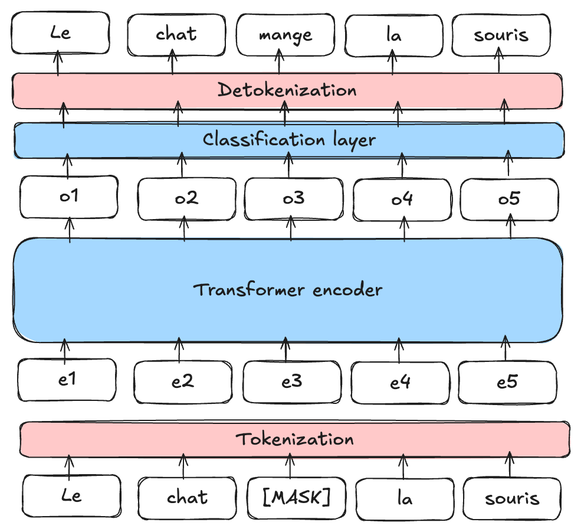
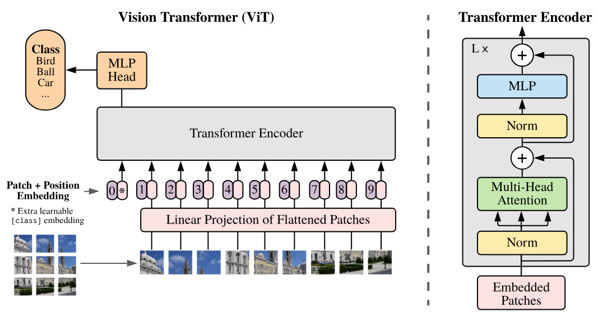

Posibles usos de la arquitectura Transformers#
En las secciones anteriores, demostramos las capacidades de los transformers mediante una aplicación de predicción del siguiente token (como GPT). También abordamos la diferencia entre el codificador (encoder), el decodificador (decoder) y la arquitectura completa para las tareas de Procesamiento del Lenguaje Natural (NLP).
Lo destacable de la arquitectura transformer es su gran versatilidad. Puede aplicarse a una amplia variedad de problemas, a diferencia de las capas convolucionales, que están sesgadas (lo que las hace muy eficientes rápidamente en el procesamiento de imágenes).
En este curso, presentaremos brevemente algunas arquitecturas clásicas de transformers en diferentes dominios, principalmente en NLP y visión por computadora.
BERT#
El artículo BERT: Pre-entrenamiento de Transformadores Bidireccionales Profundos para la Comprensión del Lenguaje propone un método para entrenar un modelo de lenguaje tipo encoder de manera no supervisada.
Sobre el entrenamiento no supervisado en NLP: Una de las fortalezas de los modelos de lenguaje (LLM) como GPT y BERT es que pueden entrenarse con grandes cantidades de datos sin necesidad de anotarlos. En el caso de GPT, se toma un documento de texto, se oculta el final y se pide al modelo que lo genere. La función de pérdida (loss) se calcula comparando la generación del modelo con el texto original (como hicimos para generar texto al estilo de Molière). En BERT, el enfoque es ligeramente diferente.
Entrenamiento modelo#
BERT es un modelo tipo encoder, lo que significa que considera el contexto de las palabras tanto a la izquierda como a la derecha (antes y después de la palabra actual). Para entrenarlo, no se puede proceder como con GPT, limitándose a predecir las palabras siguientes.
Modelo de Lenguaje Enmascarado (MLM): BERT es un Masked Language Model (MLM). Durante el entrenamiento, se enmascaran ciertas palabras de una frase (en posiciones aleatorias) y se pide al modelo que las prediga utilizando el contexto que rodea a la palabra enmascarada.

Figura extraída del artículo.
Predicción de la Siguiente Frase (NSP): BERT también está preentrenado para determinar si una frase B sigue a una frase A en el texto, lo que ayuda al modelo a comprender las relaciones entre las frases.
Nota: Para obtener más información sobre BERT y aprender a ajustarlo (fine-tuning), puedes consultar el curso 10 sobre BERT.
Utilidad de BERT#
BERT y otros modelos de lenguaje tipo encoder (como RoBERTa, ALBERT, etc.) se utilizan como base para tareas más específicas. Luego, se realiza un ajuste fino (fine-tuning) para otras tareas, como las mencionadas en el cuaderno anterior (análisis de sentimientos, clasificación de texto, etc.).
Nota: Hemos visto cómo entrenar modelos encoder y decoder de manera no supervisada para tareas de NLP (BERT y GPT). También es posible entrenar un modelo completo (con encoder, decoder y atención cruzada) de manera no supervisada, como en el caso del modelo T5. No describimos su funcionamiento en este cuaderno, pero para obtener más información, puedes consultar este artículo.
Transformers para procesamiento de imágenes#
Pocos años después del auge de los transformers en el campo del NLP, su uso en el ámbito de la visión por computadora también revolucionó este dominio. El artículo Una Imagen Vale 16x16 Palabras: Transformadores para el Reconocimiento de Imágenes a Gran Escala presenta una aplicación de un transformer tipo encoder adaptado al procesamiento de imágenes.
ViT : Vision Transformer#
Este artículo introduce el Vision Transformer (ViT), que se basa en dividir la imagen en patches (parches) que luego se ingresan al transformer como si fueran tokens.

Como se puede observar en el lado derecho de la figura, la arquitectura corresponde a un tipo de encoder (la única diferencia con respecto a Attention Is All You Need es la aplicación de las normalizaciones antes de las capas en lugar de después).
En el modelo Vision Transformer (ViT), cada imagen se divide en patches de tamaño fijo, por ejemplo, de \(16 \times 16\) píxeles. Cada patch se transforma en un vector al aplanarlo, y luego este vector se proyecta en un espacio de embedding mediante una capa de proyección lineal, similar a la utilizada en los modelos de procesamiento de texto como BERT o GPT (capa Embedding). Esta representación vectorial captura la información espacial y estructural de la imagen, al igual que los embeddings en los modelos de NLP capturan el significado y las relaciones entre palabras. El título del artículo “Una Imagen Vale 16x16 Palabras” refleja esta analogía: cada patch de la imagen se trata como una “palabra” proyectada en un espacio de embedding para permitir el aprendizaje con la arquitectura transformer.
Nota:
El Vision Transformer del artículo original se entrena de manera supervisada en tareas de clasificación de objetos. Los resultados de este artículo son impresionantes y demuestran su capacidad para superar a los modelos convolucionales.
Una mejora notable de la arquitectura ViT para tareas de visión (con entrenamiento supervisado) es el Swin Transformer. Este transformer tiene una arquitectura jerárquica (que puede recordar a las CNN) y permite capturar las relaciones espaciales de manera más eficiente.
Aprendizaje no supervisado para la visión#
En el campo del NLP, los modelos base (entrenados de manera no supervisada) han permitido avances espectaculares. Crear un modelo base para imágenes también es una tarea muy atractiva. Esto permitiría tener un modelo que pueda ajustarse fácilmente (fine-tuning) para tareas específicas y con buenos resultados. Para esta tarea, se han propuesto varias aproximaciones utilizando únicamente imágenes. A continuación, presentaremos dos de ellas.
BEIT: BEIT: Pre-entrenamiento tipo BERT para Transformadores de Imágenes propone utilizar el mismo método de entrenamiento que BERT, pero en el contexto de las imágenes. Esto consiste en enmascarar ciertos patches de la imagen y tratar de predecirlos durante el entrenamiento. Sin embargo, a diferencia de las palabras, las posibilidades de imágenes son casi infinitas (si queremos predecir una imagen RGB de tamaño \(3 \times 8 \times 8\), hay \((256 \times 256 \times 256)^{8 \times 8} = (16777216)^{64}\) posibilidades, lo que es más que el número de átomos en el universo). Por lo tanto, no se pueden predecir directamente los píxeles. Para solucionar este problema, se utiliza un VQ-VAE, que permite discretizar una representación de la imagen. Esta versión discreta corresponde a valores provenientes de un diccionario de tamaño fijo, y por lo tanto es posible predecir esta representación discreta.

Image GPT: El artículo Pre-entrenamiento Generativo a partir de Píxeles introduce un equivalente de GPT, pero para píxeles. Se trata de un modelo autorregresivo que genera los píxeles de una imagen uno por uno, al igual que un modelo autorregresivo de NLP con los tokens. Esto permite un entrenamiento no supervisado, pero presenta varios inconvenientes:
La generación toma mucho tiempo, ya que se genera un píxel a la vez. Por lo tanto, es necesario aplicar una reducción dimensional previa.
Generar de izquierda a derecha no tiene sentido para una imagen. ¿Por qué de izquierda a derecha y no de derecha a izquierda? ¿O comenzando desde el centro?

Il existe d’autres façons d’entraîner des transformers de vision (ou d’autres modèles de vision) de manière non supervisée, comme les Masked Autoencoders ou les modèles associant texte et image.
Transformers que combinan texto e imagen#
Los modelos Transformer que combinan texto e imagen han demostrado ser de gran ayuda para crear modelos de base. Estos modelos suelen ser subtituladores, es decir, están entrenados para generar una descripción de una imagen.
En esta sección, presentaremos el funcionamiento del modelo CLIP, introducido en el artículo Aprendizaje de Modelos Visuales Transferibles a partir de Supervisión con Lenguaje Natural. También explicaremos la importancia de este tipo de modelo y sus capacidades en diversas tareas.
Dans cette partie, nous allons présenter le fonctionnement du modèle CLIP introduit dans l’article Learning Transferable Visual Models From Natural Language Supervision. Nous présenterons également l’intérêt de ce type de modèle et ses capacités dans le cadre de nombreuses tâches.
Arquitectura de CLIP: El entrenamiento de CLIP se basa en un método contrastivo. Este método consiste en presentar al modelo dos ejemplos: uno positivo que corresponde a la etiqueta dada y uno negativo que no corresponde. El objetivo es que el modelo asocie correctamente el ejemplo positivo con la etiqueta, al tiempo que disocia el ejemplo negativo de la misma. Así, este enfoque permite definir una frontera clara entre lo que es relevante (positivo) y lo que no lo es (negativo), maximizando la separación entre ambos.
En la práctica, CLIP utiliza tanto un codificador de texto (encoder) como un codificador de imágenes, ambos basados en arquitecturas de transformers. El modelo codifica descripciones textuales e imágenes para luego asociarlas correctamente durante el entrenamiento. El objetivo principal es maximizar la correlación entre las descripciones y las imágenes correspondientes, mientras se minimiza esta correlación para las parejas que no coinciden. Esto permite al modelo aprender a representar de manera eficiente las relaciones entre texto e imagen en un espacio de embedding común, facilitando así la comprensión y generación de texto a partir de imágenes, y viceversa.
Lors de la phase de test, on peut demander au modèle de générer une description adaptée pour notre image.

Uso del modelo: Más allá de ser un simple generador de subtítulos (captioner), CLIP también permite realizar clasificación zero-shot, es decir, clasificar una imagen sin haber entrenado el modelo específicamente para esa tarea. En el caso de CLIP, esto permite asignar una puntuación a cada descripción que se le proporciona. Por ejemplo, si se le dan dos descripciones como “Una foto de un gato” y “Una foto de un perro”, devuelve puntuaciones de probabilidad que indican qué tan asociada está la imagen actual con cada una de las descripciones.
Otros usos: Este método de entrenamiento también ha permitido crear modelos de detección zero-shot, como OWL-ViT, modelos de transferencia de estilo e incluso modelos de generación de imágenes.
Conjuntos de datos de imágenes con descripciones: También podemos preguntarnos si una descripción de imagen no es equivalente a una etiqueta y si, por lo tanto, necesitaríamos una anotación laboriosa para entrenar este tipo de modelos (que requieren miles de millones de imágenes para ser eficientes). En realidad, es posible recolectar imágenes con descripciones de manera sencilla en internet gracias al atributo “alt” de las imágenes en el código HTML, que es una descripción que las personas añaden a sus imágenes.
Por supuesto, estos datos no son necesariamente confiables, pero en este tipo de modelos la cantidad es más importante que la calidad.
Además, actualmente existen bases de datos de código abierto que contienen miles de millones de pares imagen/descripción. La más conocida es LAION-5B.